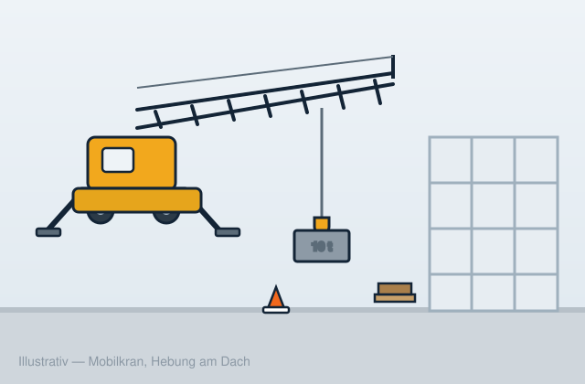
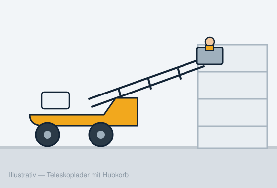

Mobilkrane
Mobile & baustellentaugliche Mobilkrane für Hebungen aller Art.
Mobilkrane, Raupenkrane, LKW-Krane und Teleskoplader — mit Kranführung für Bau, Industrie und Logistik. Schriftliche Angebote. Wir sprechen Deutsch, Français, English.
Kostenloses Angebot anfordern Anrufen (+352) 00 00 00 00
Wenn der Stapler nicht mehr reicht und der Termin nicht rutschen darf: Sie brauchen ein Angebot, das die richtigen Fragen stellt — Gewicht, Radius, Zufahrt, Datum — und eine Crew, die ankommt, wenn sie sagt.

Mobile & baustellentaugliche Mobilkrane für Hebungen aller Art.
Raupenkrane und All-Terrain-Krane für unebene, weiche oder beengte Standflächen.
LKW- bzw. lastwagenmontierte Krane für Straßen-, Hof- und Stadtarbeiten.
Teleskoplader und Hubbooms für MaterialHandling, Dachstühle und Pakete.
Kran mit Kranführer oder ohne — ehrlich erklärt, inkl. Hebeplan und Einweisung.
Werk- und Anlagenmontage, Outage-Hebungen, Logistikkoordination im Industriebetrieb.
Dachstühle, Fertigteile, Garagen und Fensterhebungen für Bauunternehmen und Privat.
Kurzfristige Hebeanfragen, wenn die Planung kippt — realistisch, ohne Fake-24/7-Versprechen.
Für die meisten Bauherben reicht ein 30-Tonnen-Autokran: ca. 500–1.500 € pro Tag inkl. Kranführer, stundenweise meist 150–200 €/Std (Mindestmietdauer oft 4 Std.). Wochenmieten ca. 2.100–6.700 €, Monatsmieten ca. 7.000–22.500 €. Anfahrt/Mobilisation und Genehmigungen (z. B. Sondernutzung bei Einsätzen auf öffentlichem Grund) werden im Angebot ausgewiesen. Ihr schriftliches Angebot ist die echte Zahl — nicht diese Tabelle.
Luxemburg baut wie selten zuvor: Belval und der Süden transformieren, Logistik- und Rechenzentren entstehen entlang der Achse Mersch–Contern, im Norden wächst der Wohnbau. Gleichzeitig sitzen die großen Kranflotten im äußersten Südwesten der Großregion — für eine Dachstuhl-Hebung in Wiltz oder eine Fensterhebung in Echternach ist das eine lange Anfahrt.
Wir sammeln Hebeanfragen des Landes und verbinden sie mit den passenden Kranvermietern und Kranführern der Großregion — schnell, schriftlich, ohne Überraschungen.

Für die meisten Bauherben reicht ein30-Tonnen-Autokran: typischer Tagessatz netto ca. 500–1.500 € inkl. Kranführer, stundenweise meist 150–200 € (Mindestmietdauer oft 4 Stunden). Wochen- und Monatsmieten liegen bei ca. 2.100–6.700 € bzw. 7.000–22.500 €. Anfahrt und Mobilisation werden im schriftlichen Angebot ausgewiesen. Das ist ein typischer Marktrahmen 2026 — Ihr individuelles Angebot ist die echte Zahl.
Ja, das ist in Luxemburg und der Grenzregion üblich. Achtung: Die Führung eines Autokrans setzt die entsprechende Berechtigung voraus (z. B. Kranführerschein der ITM bzw.dt. G20). Ohne eigenen Kranführer empfehlen wir den Kran mit geprüftem Kranführer — wir sagen im Angebot klar, was wann gilt.
Kurzfristige Einsätze sind oft innerhalb von 24–48 Stunden möglich, wenn die Bau- oder Anlageneinweisung geklärt ist. Bei Notfällen (z. B. kippende Last, Sturmschaden) rufen Sie uns an — wir sagen ehrlich, was der nächste verfügbare Kran im Zeitfenster schafft, statt ein Fake-24/7-Versprechen zu geben.
Fünf Dinge: (1) Lastgewicht und Maße, (2) Hebehöhe und Radius, (3) Standflächen-Boden und Zufahrt (Torbreite, enge Gasse, Tiefgarage?), (4) Wunschdatum und Dauer, (5) Einsatzort. Fotos der Abhol- und Absetzstelle helfen enorm. Je genauer diese Angaben, desto schneller das schriftliche Angebot.
Unsere Kranpartner sitzen in der Grande Région — Trier, Bitburg, Saarbrücken, Thionville, Arlon. Einsätze grenzüberschreitend sind Alltag; die Anfahrt wird transparent im Angebot ausgewiesen, ohne Überraschungen.
Für Bauherren und Betriebe ist die Anfrage kostenlos und unverbindlich. Sie erhalten ein schriftliches Angebot vom Kranpartner — Sie entscheiden in Ruhe, ob Sie es annehmen.
Tell uns Gewicht, Radius, Zufahrt und Datum — wir melden uns mit einem klaren nächsten Schritt. Schriftliches Angebot vor dem Auftrag.
Gewicht, Radius, Zufahrt und Datum sagen — wir melden uns mit einem klaren nächsten Schritt. Schriftliches Angebot vor dem Auftrag.